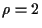

Next: Recombination
Up: R
Previous: Rank-based selection
Real-coded GA
GA tailored for the optimization in real-valued search spaces. In contrast to
the canonical GA, the
genome consists of (real-valued)
object parameters,
i.e., evolution operates on the ``natural''
representation. The real-coded GA employs special recombination operators,
which are hybrid constructs of
intermediate recombination
(usually ) and
mutation.
Real-coded GAs can exhibit
self-adaptive behavior.
Hans-Georg Beyer
2002-02-25